Lorsqu’ils sont générés, les graphiques appliquent un thème/style par défaut:
Ces thèmes sont appelés scheme.
Les options de la commande graphique visent à modifier les paramètres du thème.
Les paramètres du style/thèmes sont appliqués aux couleurs, tailles/épaisseurs, positions des éléments de texte, définitions des axes….
Stata dispose de 5 thèmes officiels. Des thèmes externes ont été programmés et peuvent être installés. La série de commandes associées à
grstyle(Ben Jann) permet de paramétrer très facilement un thème, a minima en 2-3 lignes avec un nombre très réduit d’arguments.Collection
schemepack: récemment (2021), Asjad Naqvi a programmé une suite de thèmes à partir du paquetgrstyle. Cette série offre une alternative très séduisante au thèmes usines vieillissants de Stata.Les thèmes utilisent des palettes de couleurs. Il existe 3 types de palettes selon la nature des données.
- Palettes qualitatives (variables discrètes).
- Palettes séquentielles (variables ordonnées/quantitatives).
- Palettes divergentes (variables ordonnées/quantitatives avec deux sens implicites et une valeur pivot
Des commandes externes permettent d’augmenter le nombre de palettes mises à disposition par Stata, de les modifier ou de les créer.
Pour la cartographie, la commande
spmap(Maurizio Pisatti) intègre une quarantaine de palettes, principalement séquentielles (commande à visée cartographique).La librairie
brewscheme(William Buchanan) dispose de plusieurs commandes pour générer des palettes de couleurs. Son utilisation est assez complexe.La commande **
colorpalette(Benn Jann) charge plusieurs dizaines de palettes de couleurs, de tout type, permet de les modifier, d’en créer, et de les utiliser facilement dans la création de graphiques. Elle est indispensable dès lors qu’on souhaite utiliser efficacement des couleurs différentes de celles fournies par le logiciel. Cette commande, à mon sens incontournable, sera longuement traitée dans ce chapitre, ainsi que la commandegrstylequi reprend sa syntaxe pour générer de manière rapide un thème.
1 Couleurs et palettes de couleurs
1.1 Les palettes usines
Stata dispose de 5 palettes de couleurs usines qui sont associées à des thèmes graphiques. Par exemple la palette s2 est associée au thème s2color.
Les palettes associées aux thèmes Stata sont de type qualitative. L’ordre d’utilisation des couleurs dans un graphique composé de plusieurs objets est pensé de tel sorte que des couleurs même type, par exemple le bleu, ne se succède pas.
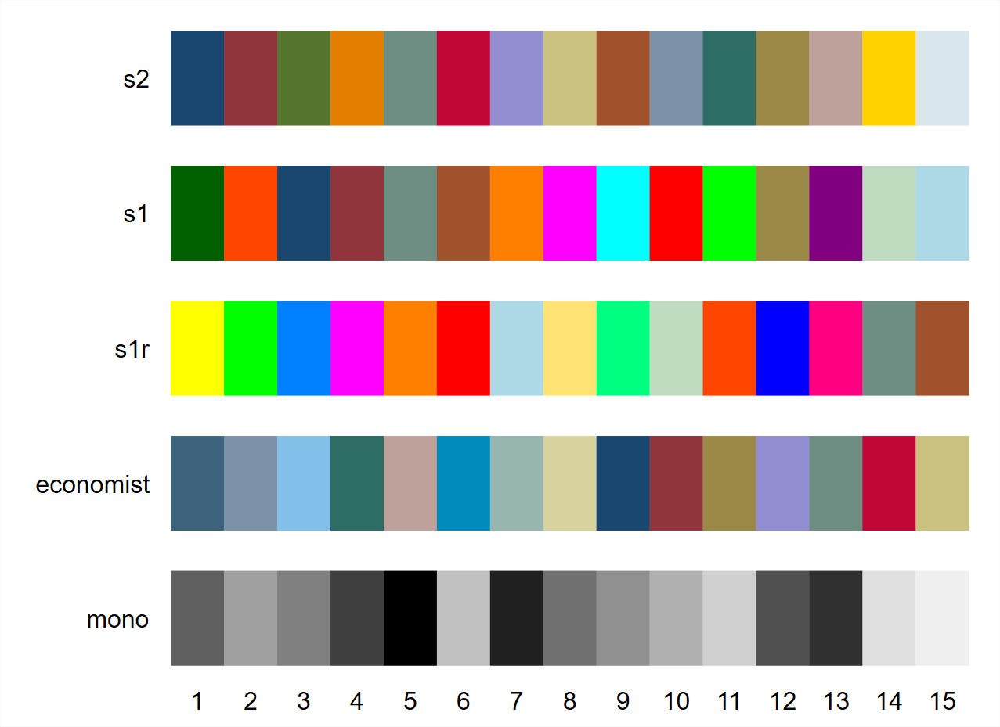
Les numéros sur l’abscisse correspondent à l’ordre par défaut d’utilisation des couleurs.Les couleurs usines ont un nom, auquel correspond un code RGB.
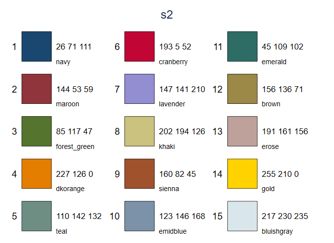
La palette mono d’avère très utile pour modifier les couleurs des titres, labels, grids ou du background. Elle est ambivalente, l’ordre par défaut de la palette est plutôt qualitatif, mais le nom des couleurs correspond à une palette séquentielle appelé « grey scale » (gs# avec # allant de 0 – noir – à 16 – blanc).
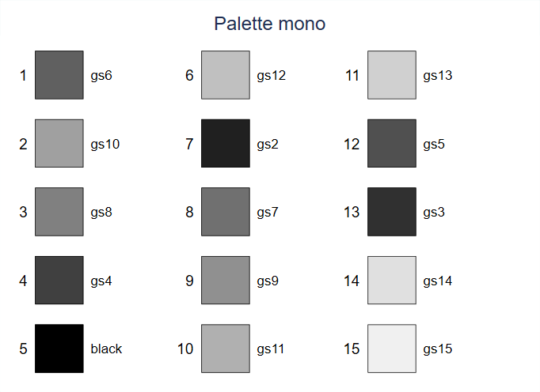
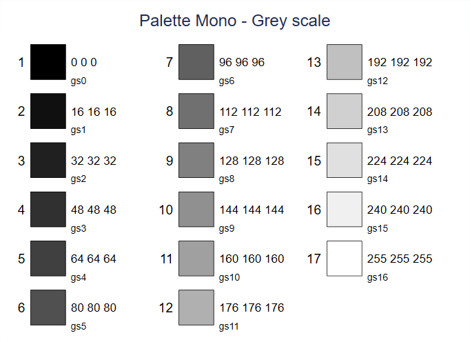
Remarque: il est facile de générer une couleur appartenant à une palette correspondant à une échelle de gris: les trois valeurs du code RGB étant identique (compris entre 0 et 255).
On est vite limité avec les palettes usines de Stata. Malgré les efforts de plusieurs utilisateurs pour augmenter leur nombre (M.Pissatti, F.Briatte, D.Bischoff…), la commande colorpalette (Ben Jann) a récemment permis de démultiplier quasiment à l’infini les possibilités en terme de manipulation des couleurs.
1.2 Colorpalette (Ben Jann)
Installationssc install palettes [, replace force]
ssc install colrspace [, replace force] colorpalette nom_palette/collection [, nom_sous_palette] [options]Remarque: le nom d’une palette peut être une couleur ou une série de couleur
* Charge et affiche la palette s1 de Stata
colorpalette s1
* Charge et affiche la palette hue
colorpalette hue
* Charge et affiche la palette viridis
colorpalette viridis
* Charge et affiche la palette summer de la collection matplotlib
colorpalette matplotlib, summer
* Charge et affiche une palette composée des couleur bleu et rouge
colorpalette blue redPour visualiser les palettes disponibles : help colorpalette.
Exemple : la palette plasma
- Appartient à la collection viridis, palettes Python visant à remplacer les palettes de la collection matplotlib* (intégrée à
colorpalette) - Longueur par défaut : 15 couleurs
- Type : séquentielle
colorpalette plasma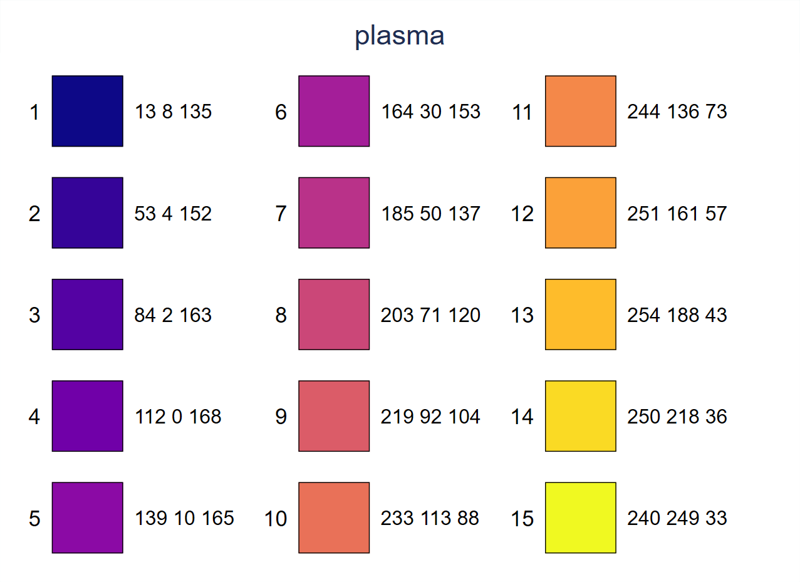
1.2.1 Principales options et altération d’une palette
Modifier la taille de la palette: n(#)
Important car la réduction de la taille pour certaines palettes ne consiste pas à prendre les # premiers éléments de la palette par défaut (cf palettes hue ou viridis), mais forcer une palette non qualitative, donc plutôt séquentielle, à produire une palette réduite avec des types de couleurs contrastées plutôt qualitative.
Modifier l’intensité ou l’opacité : intensity(#), opacity(#) et ipolate(#)
On peut modifier l’intensité (saturation) ou l’opacité d’une palette avec
intensity(#)ouintensity(numlist)** etopacity(#).On peut créer une palette séquentielle à partir d’une couleur de départ avec
intensity(#1(delta)#2).On peut créer une palette divergente avec des couleurs de départ, d’arrivée et de transition avec
ipolate(#).
Select – reverse - nograph
On peut sélectionner des couleurs d’une palette avec
select(numlist). L’option autorise la répétition de couleurs, utile lorsque plusieurs objets graphiques partage une même couleur au sein d’un graphique (exemple nuages de point et courbes pour différentes valeurs d’une variable additionnelle : voir exemple avecgrstyle).On peut inverser l’ordre des couleurs de la palette:
reverse.Ne pas afficher la palette:
nograph[voir utilisation de colorpalette pour générer un graphique]. Après avoir séléctionné les couleurs, à utiliser systématiquement pour charger la palette avant son utilisation dans un graphique. Cela réduit considérablement le temps d’exécution.
Création d’une palette de 4 couleurs
colorpalette plasma, n(4)
Répétition d’une liste de couleur avec select(numlist)
colorpalette plasma, select(1 8 15 1 8 15)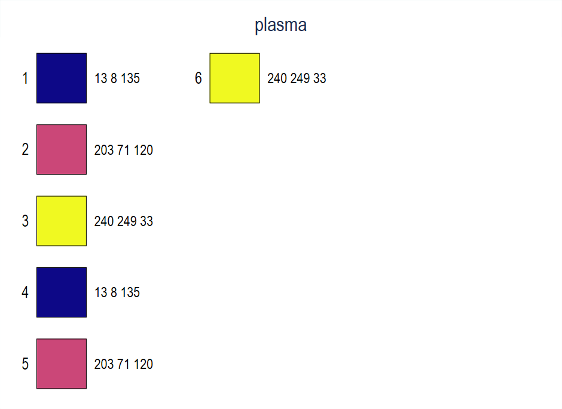
Création d’une palette séquentielle avec augmentation de l’intensité
A partir de la couleur 3 (RGB= 237,121,83), création d’une palette sequentielle d’une longueur de 15, allant de “237,121,830” (proche blanc) à ”237,121,8315”.
colorpalette "237 121 83", intensity(0(.1)1.5)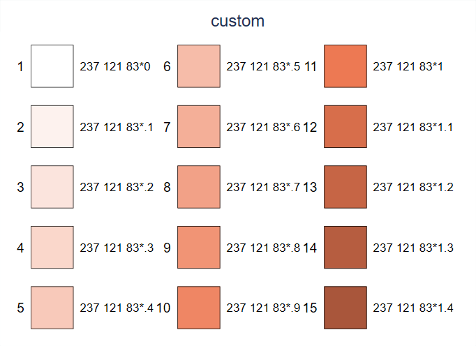
Création d’une palette séquentielle avec augmentation de l’intensité
Création d’une palette séquentielle d’une longueur 15 allant de la couleur 1 à la couleur 3 de la palette plasma à 4 couleurs.
colorpalette "13 8 135" "237 121 83", ipolate(15)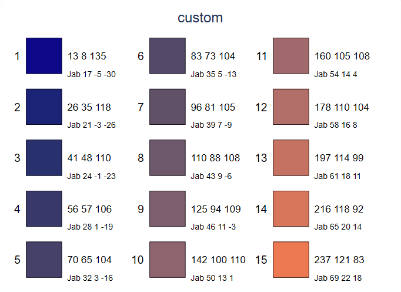
Si on ajoute la couleur 2 de la palette d’origine comme couleur de transition
colorpalette "13 8 135" "156 23 158" "237 121 83", ipolate(15)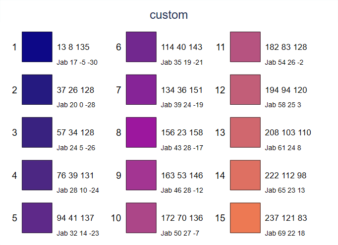
Si on utilise le blanc comme couleur de transition, on obtient une palette divergente.
colorpalette "13 8 135" white "237 121 83", ipolate(15)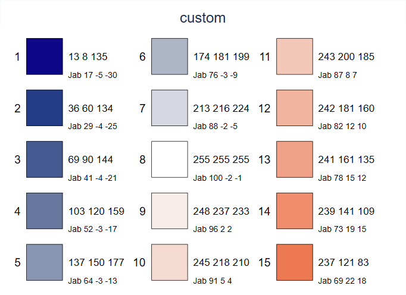
Créer, enregistrer et charger sa propre palette
colorpalette permet de conserver en mémoire sa propre palette, en la générant dans un .ado (voir la fin du chapitre dédié aux macros) ou dans le programme principal. Par exemple avec la palette issue du premier exemple (palette plasma à 4 couleur).
* Création de la palette mypal
capt program drop colorpalette_mypal
program colorpalette_mypal
c_local P 13 8 135, 156 23 158, 237 121 83, 240 249 33
c_local class qualitative
end
* On charge la palette avec la commande colorpalette_mypal
colorpalette_mypal
* On affiche la palette my_pal
colorpalette my_pal1.2.2 Utilisation de colorpalette pour générer un graphique
On remarque, avec return list, que la commande génère une liste de macros qui enregistre les codes RGB des couleurs de la palette.
- la macro
r(p)permet d’utiliser les couleurs de la palette dans un graphique à un seul bloc d’éléments. - les macros
r(p#)permettent d’utiliser les couleurs dans un graphique composé de plusieurs éléments.
La commande colorpalette n’est qu’un générateur de couleurs qui renvoie une liste de codes RGB sous forme de macros. Si pour des graphiques simples la technique du « copié/collé » de codes RGB reste possible, l’utilisation des macros va être une nouvelle fois fortement recommandée. On peut déjà néanmoins indiquer qu’avec le générateur de thème **grstyle (voir la section suivante), également programmé par B.Jann, une sélection de couleurs pourra être directement intégrée à un graphique sans manipulation supplémentaire.
Macros générées par colorpalette
On va partir de la palette plasma précédente avec 4 couleurs et un % d’opacité de 80%. Avec return list, on affiche sous forme de macros la liste des codes RGB des couleurs
colorpalette plasma, n(4) opacity(80) nograph
return list
/*
scalars:
r(n) = 4
macros:
r(ptype) : "color"
r(pname) : "plasma"
r(pnote) : "plasma colormap from matplotlib.org"
r(psource) : "https://github.com/matplotlib/matplotlib/blob/master/lib/matplotlib/_cm_listed.py"
r(pclass) : "sequential"
r(p) : ""13 8 135%80" "156 23 158%80" "237 121 83%80" "240 249 33%80""
r(p4) : "240 249 33%80"
r(p3) : "237 121 83%80"
r(p2) : "156 23 158%80"
r(p1) : "13 8 135%80"
*/La liste renvoie la macro r(p) qui liste l’ensemble des codes couleurs. Cette macro est utilisée pour les graphiques avec un seul objet qui liste pour l’axe des ordonnées une série de variables.
Exemplesysuse uslifeexp
colorpalette plasma, n(4) opacity(80) nograph
tw line le_wmale le_wfemale le_bmale le_bfemale year, lc(`r(p)')La macro r(p) a déjà deux doubles quotes, on ne doit pas enfermer cette liste par ““.
La liste de macros r(p#) renvoie le code couleur de chaque élément de la palette, ici r(p1) à r(p4). Ces macros sont utilisées pour les graphiques composés de plusieurs objets. Entrée directement dans la syntaxe d’un graphique, ces macros devront être enfermées dans des doubles quotes.
Exemple
On va afficher un graphique avec 4 densités sous forme d’aires générées aléatoirement. De nouveau on utilisera la palette plasma réduite à 4 couleurs et 80% d’opacité.
clear
set obs 1000
gen y1= rnormal(0,1.5)
gen y2= rnormal(3, 2)
gen y3= rnormal(6, 3)
gen y4= rnormal(9, 4)
forv i=1/4 {
kdensity y`i', n(500) gen(x`i' d`i') nograph
}Colorpalette plasma , n(4) opacity(80) nograph
local ops lc(black) lw(*.5)
#delimit ;
tw line d1 x1, recast(area) `ops' fc("`r(p1)'")
|| line d2 x2, recast(area) `ops' fc("`r(p2)'")
|| line d3 x3, recast(area) `ops' fc("`r(p3)'")
|| line d4 x4, recast(area) `ops' fc("`r(p4)'")
||, legend(order(1 "r(p1)" 2 "r(p2)" 3 "r(p3)" 4 "r(p4)") pos(11) row(1) region(color(%0)))
;
Sans modifier la syntaxe du graphique, on peut alors simplement changer de palette, en modifiant son nom et/ou en modifiant une ou plusieurs options comme l’opacité.
Exemple: palette winter de la collection matplotlib, avec 50% d’opacité et en inversant l’ordre des couleurs.
colorpalette plasma , n(4) opacity(80) nograph
local ops lc(black) lw(*.5)
#delimit ;
tw line d1 x1, recast(area) `ops' fc("`r(p1)'")
|| line d2 x2, recast(area) `ops' fc("`r(p2)'")
|| line d3 x3, recast(area) `ops' fc("`r(p3)'")
|| line d4 x4, recast(area) `ops' fc("`r(p4)'")
||, legend(order(1 "`r(p1)'" 2 "`r(p2)'" 3 "`r(p3)'" 4 "`r(p4)'")
pos(11) row(1) region(color(%0)))
;Remarque : en utilisant les macros dans la légende, on a affiché les codes couleurs
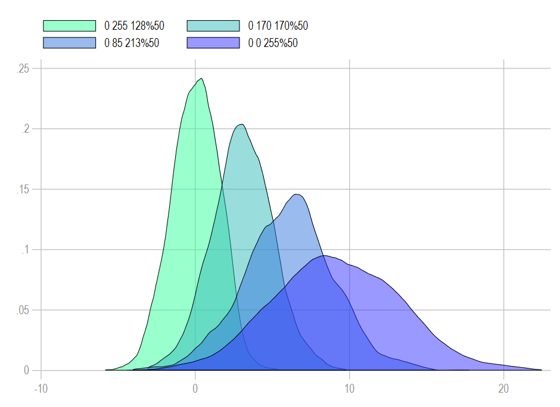
1.3 Exemples de palettes
Sur le même principe que les deux graphiques précédents mais avec 6 éléments, on a mis à disposition une petite commande, testpal, qui permet de tester le rendu d’un graphique. La commande reporte 6 objets graphiques sous la forme de densités représentées par des aires et par des groupes. Les deux graphiques de la première colonne sont sur un fond blanc, ceux de la deuxième colonne sont sur un fond paramétrable (palette gs) par défaut très sombre.
net install testpal, from("https://mthevenin.github.io/stata_fr/ado/testpal/") replacetestpal nom_palette , [rev] [op(#)] [bf(#)]rev: inverse l’ordre des couleurs de la palette.op(#): modifie le pourcentage d’opacité des couleurs. Par défaut 100% (op(100)). # est compris entre 0+ et 100.bf(#): permet de modifier la clarté des graphiques de la seconde colonne (blanc pour la première). # est une valeur comprise entre 1 (noir) et 14 (presque blanc).
testpal burd, rev op(100) bf(5)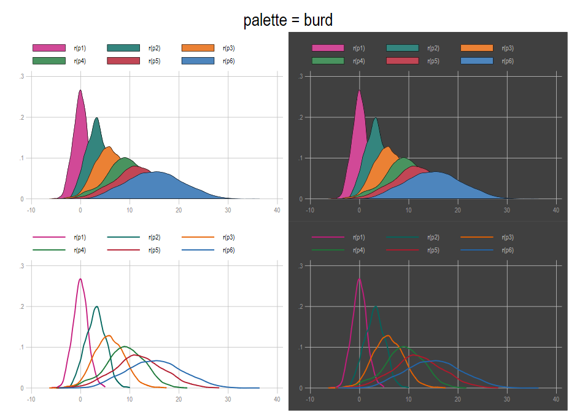
Pour les quelques palettes populaires qui vont être rapidement présentées, les options de la commande testpal n’ont pas été modifiées. Le nom de la palette est donné par le titre du graphique.
1.3.1 Palettes qualitatives
Tableau
https://www.tableau.com/about/blog/2016/7/colors-upgrade-tableau-10-56782
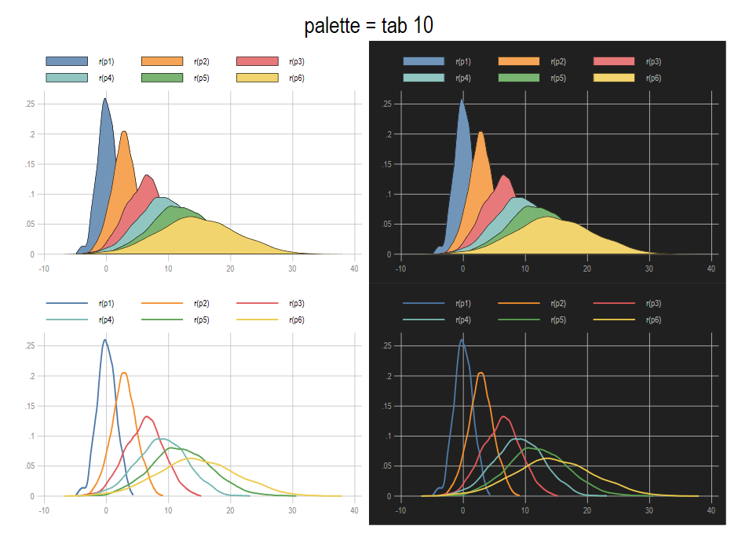
HUE
- Il s’agit de la palette par défaut de ggplot2 (R)
- De plus en plus remplacée par la palette Viridis (voir plus loin)
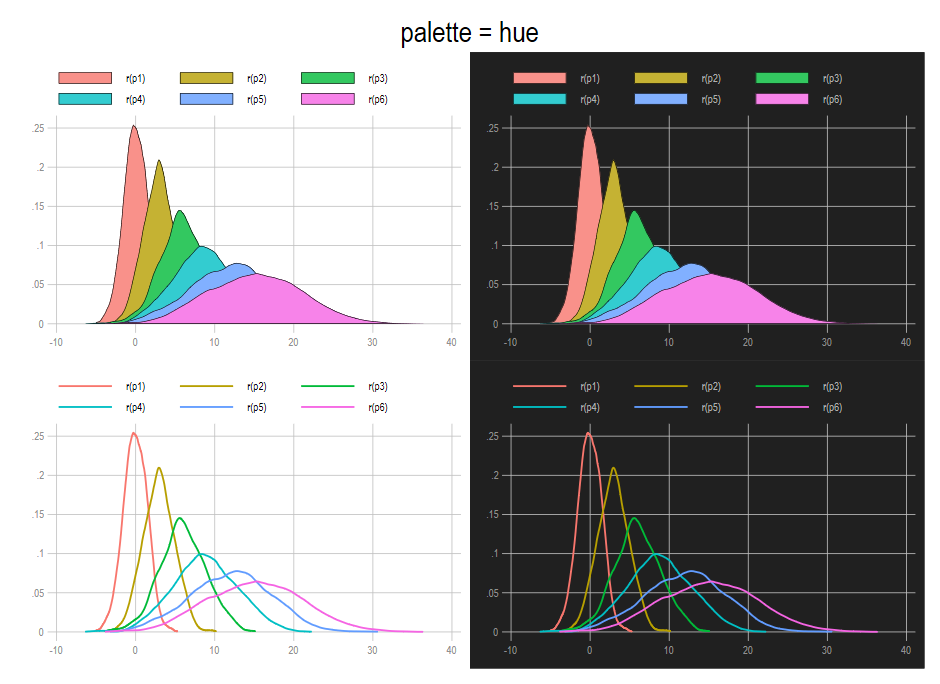
1.3.2 Palettes séquentielles
- Utilisées massivement en cartographie et plus généralement pour représenter des fréquences (graphique type barre) ou des valeurs ordonnées
- Couleurs allant du plus clair au plus foncé (ou inversement). – Modification de l’intensité d’une couleur. – Une ou plusieurs gammes de couleurs : par exemples du jaune au rouge, du jaune au bleu…
En réduisant la taille de certaines palettes séquentielles ou divergentes, on peut obtenir une palette plutôt qualitative. C’est le cas de la collection, très en vogue, Viridis.
Collection viridis
- La palette Viridis et les ses palettes associées (plasma, magma, cividis…) est la palette “star” du moment.
- Développée pour Python pour donner une palette alternative à Matplotlib, elle est devenue la palette par défaut de la librairie graphique
- Avantages:
- Même rendu, ou très proche, des couleurs sur toutes les parties d’un écran (uniformité).
- Différences de couleurs maintenue à l’impression n&b.
- Gère la plupart des formes de daltonisme.
- Limites : pour les courbes, un fond blanc ou très clair ou un fond noir ou très foncé, les couleurs aux extrémités passent difficilement. Prévoir un fond gris moyen ou ne pas sélectionner les couleurs aux extrémités de la palette.
- Les autres palettes : plasma est également très utilisée, en particulier pour le remplissage de surface (aire).
- Plus d’infos : https://rtask.thinkr.fr/fr/ggplot2-welcome-viridis/
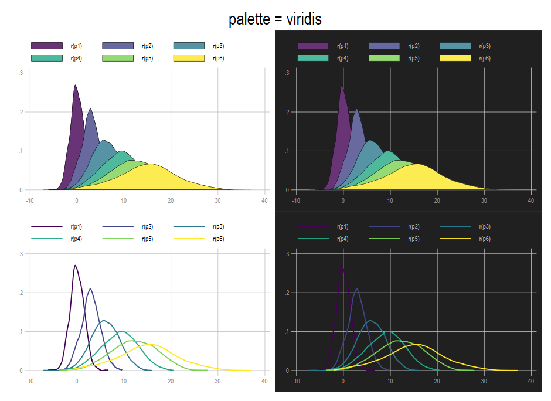
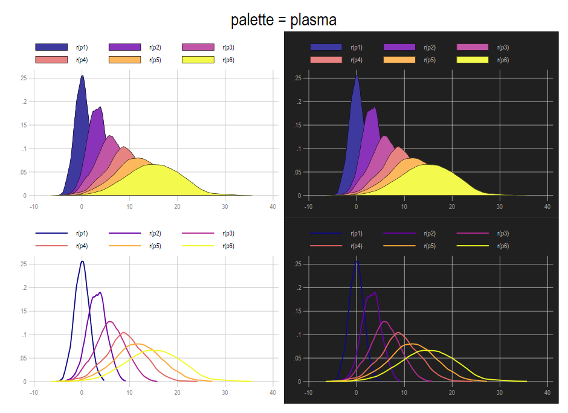
Collection colorbrewer
Très populaire en cartographie: https://colorbrewer2.org/#type=sequential&scheme=BuGn&n=3
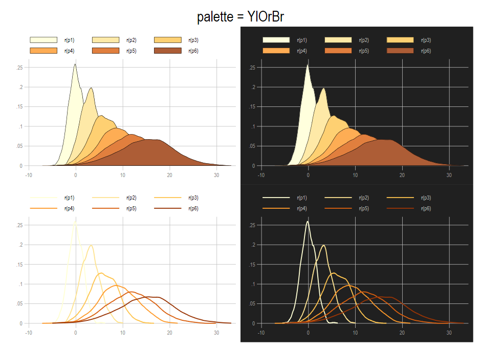
On présentera enfin une seule palette de type divergente, issue de cette collection, la palette spectral.
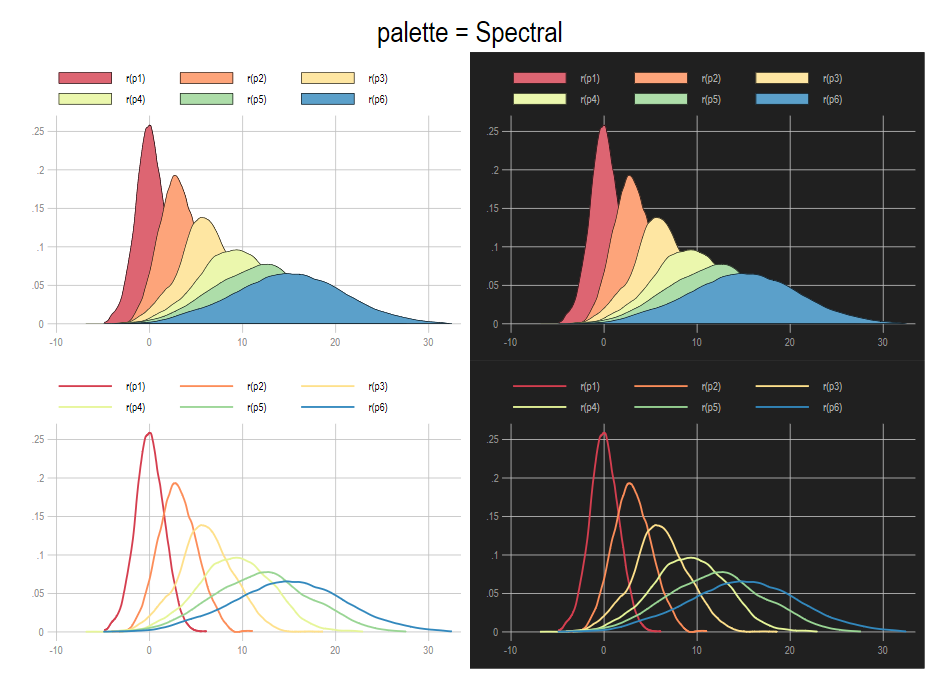
2 Styles-thèmes
Le thème est la « mise page » par défaut du graphique.
- Tous les graphiques ont un thème, appelé scheme qui paramètre tous les éléments composant le graphique : couleurs, épaisseurs, positions, contours, marges….
- Les options entrées dans le graphique visent à modifier ce paramétrage.
- Stata dispose de 11 thèmes internes, celui utilisé par défaut est s2color (factory scheme)
- Sans modifier des options, un thème peut ne pas être adapté à un graphique.
Changement de thème:
- Par les boîtes de dialogue: « Edit » => « Préférences » => « Graph preferences ».
- Par une ligne de commande:
- On peut changer de thème en option d’un graphique : scheme(nom_scheme)
- Dans un fichier .do ou .ado on peut charger un thème de façon temporaire (session) ou permanente: set scheme nom_scheme [,permanently]
- Le choix du thème peut-être également intégré au fichier profile.do (charge le thème au début de chaque session
2.1 Styles internes-externes
Styles internes
Stata fournit 11 thèmes internes dont la liste peut être obtenue avec help scheme.
Exemple de mise en page interne avec 4 de ces 11 thèmes
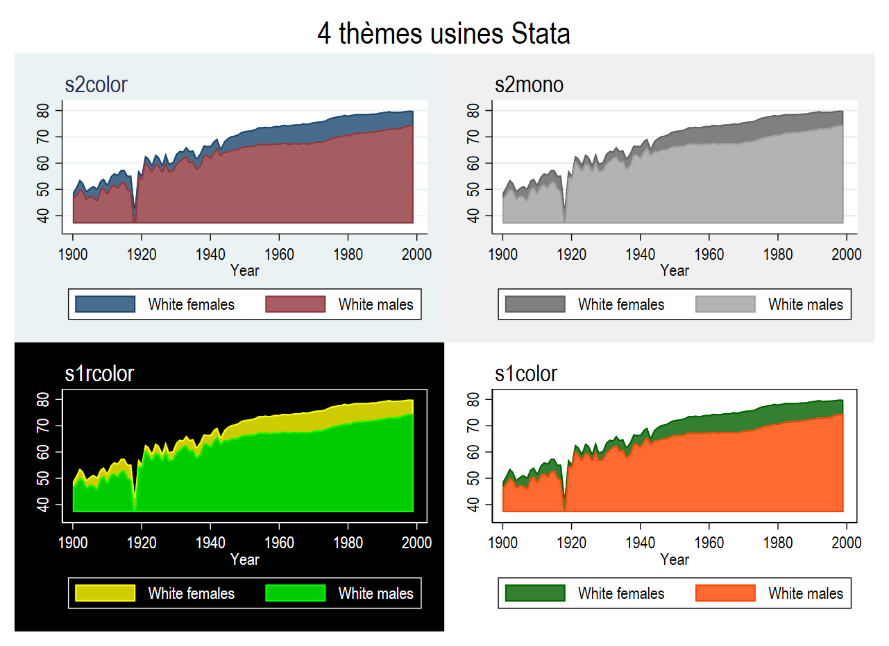
Styles externes
Plusieurs thèmes et collection de thèmes externe peuvent être installées, comme les collections de F.Briatte (Burd) et de D.Bischoff (plottig, plotplainblind…). Récemment A.Naqvi a programmé une série de thèmes intéressante, nommée schemepack, qui proposent pour plusieurs palettes de couleurs 3 variations : white_nompalette, black_nompalette et gg_nompalette.
net install schemepack, from("https://raw.githubusercontent.com/asjadnaqvi/Stata-schemes/main/schemes/") replace
help schemepack Attention seulement une palette est de type qualitative (tableau), les autres séquentielles. L’utilisation des thèmes associés aux palettes séquentielles peuvent donner un rendu peu satisfaisant lorsque le nombre d’objets graphique réduit (par exemple 2 courbes). Il conviendra alors d’utiliser en amont colorpalette. Egalement, la position par défaut de la légende a été fixée à 3 heures ce qui n’est peut-être pas le plus judicieux.
Exemple avec les thèmes white_tableau et white_viridis 
Les deux couleurs se distinguent difficilement avec la palette viridis. On peut corriger rapidement ce problème avec colorpalette.
use uslifeexp, clear
colorpalette viridis, n(2) nograph
tw line le_wfemale le_wmale year, ///
fc(`r(p)') lc(`r(p)') recast(area) scheme(white_viridis)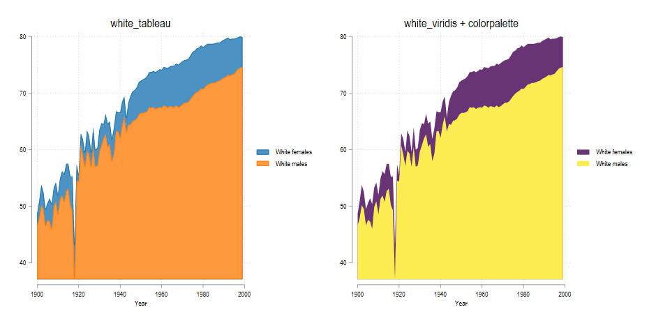
2.2 grstyle de B.Jann
Parallèllement à colorpalette, B.Jann a mis à disposition un générateur de thème dont l’utilisation, à minima, me semble particulièrement efficace. Ici nous présenteront que les quelques options que j’utilise quasi exclusivement.
Installationssc install grstyleInitialisation et chargement
- Dans un programme on initialise le générateur avec
grstyle init - On peut enregistrer un thème avec un nom:
grstyle init nom_thème, [path] [replace] - Si le thème a été enregistré, on peut le charger dans un graphique avec
scheme(nom_scheme)ou avec la commandeset scheme. Lors de sa création, le thème est chargé pendant la session. - Les modifications de l’habillage et de la mise en page du graphique se fait avec une série de commandes préfixées par
grstyle set [legend/color….].
Background du graphique, grid, légende
grstyle propose 3 options pour le background et le quadrillage : plain, mesh et imesh. Par exemples avec quelques sous options supplémentaires:
grstyle set plain, horizontal compactgrstyle set mesh, horizontal compactgrstyle set imesh, horizontal compact
Légende ( position et retirer le contour)
On peut retirer facilement le contour de la légende (on allège ainsi les options du graphique) avec nobox. En positionnant la légende à 11 heures
grstyle set legend 11 , nobox

|

|

|
Couleurs
Même syntaxe que colorpalette, ici on associe le choix de la palette de couleurs à grstyle set color Avec la palette viridis réduite à deux couleurs, par exemple avec select(1 11)
grstyle set color viridis, select(1 11)
Exemple avec le fond de type mesh, la légende à 11 heures sans contour et une sélection de deux couleurs de la palette viridis

webuse set https://github.com/mthevenin/stata_graphiques/tree/main/bases
use pingouin, replace
webuse set
grstyle init
grstyle set mesh, horizontal compact
grstyle set legend 11, nobox
grstyle set color plasma, select(6 9 12 6 9 12)
local osl lw(*1.2)
local osca msize(*.8) msymbol(+)
#delimit ;
tw sca bill_length_mm flipper_length_mm if espèce==1, jitter(3) `osca'
|| sca bill_length_mm flipper_length_mm if espèce==2, jitter(3) `osca'
|| sca bill_length_mm flipper_length_mm if espèce==3, jitter(3) `osca'
|| lowess bill_length_mm flipper_length_mm if espèce==1, `osl'
|| lowess bill_length_mm flipper_length_mm if espèce==2, `osl'
|| lowess bill_length_mm flipper_length_mm if espèce==3, `osl'
|| , legend(order(1 "Pingouin Adélie" 2 "Manchot à jugulaire" 3 "Manchot papou") row(1))
ytitle("Longueur bec (mm)") xtitle("Longueur nageoire (mm)")
title("Longueurs du bec et des nageoires")
;
#delimit crPlus qu’un générateur de thème, une utilisation minimale grstyle permet de paramétrer des options en amont du graphique et donc d’alleger sensiblement son programme et faciliter ses modifications.